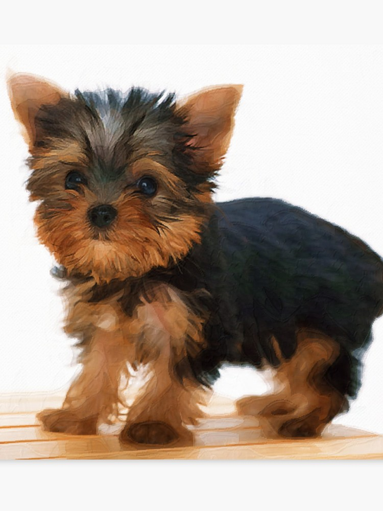
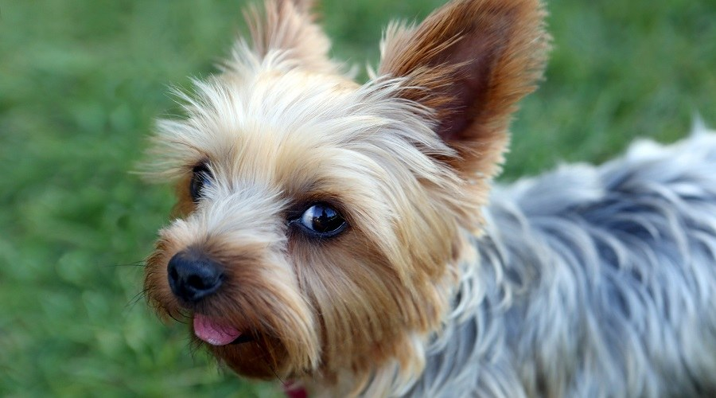
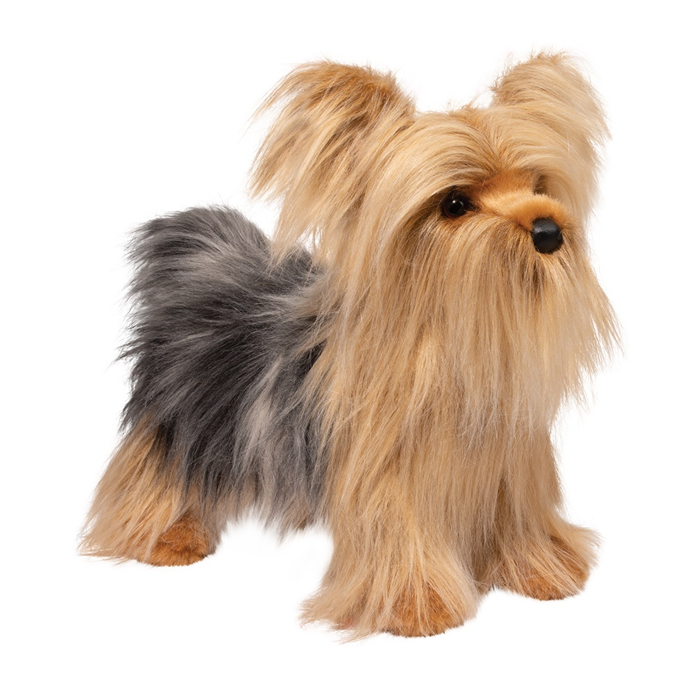
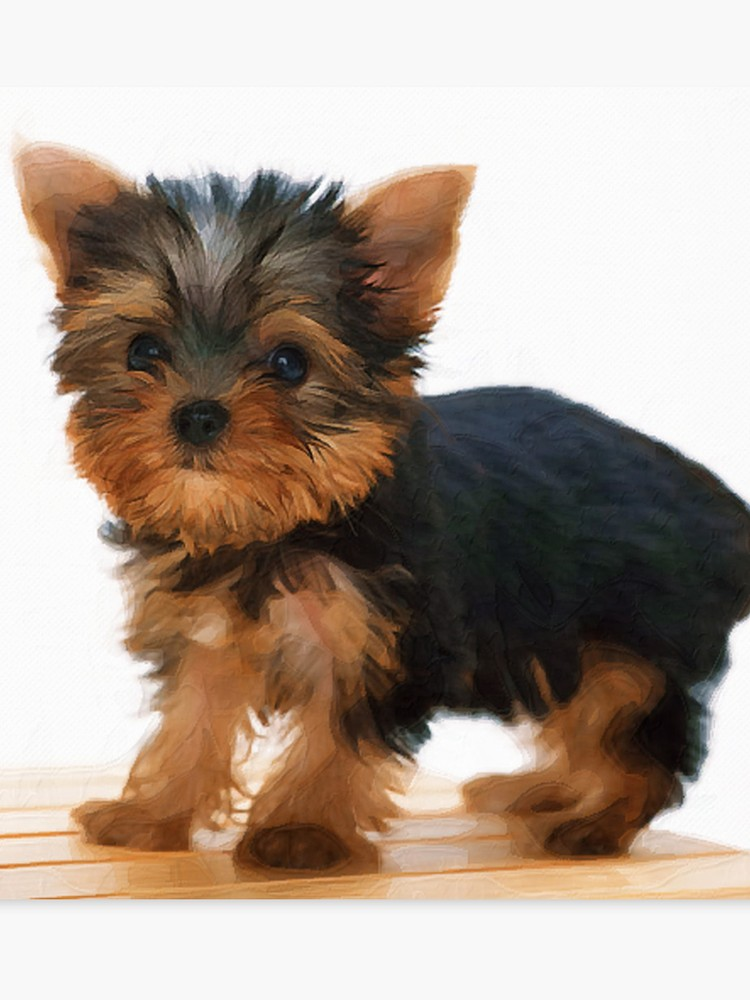
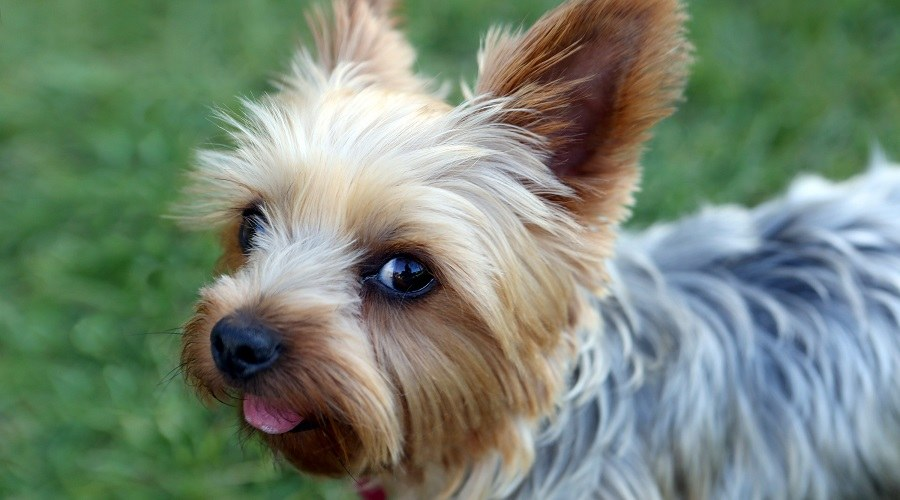
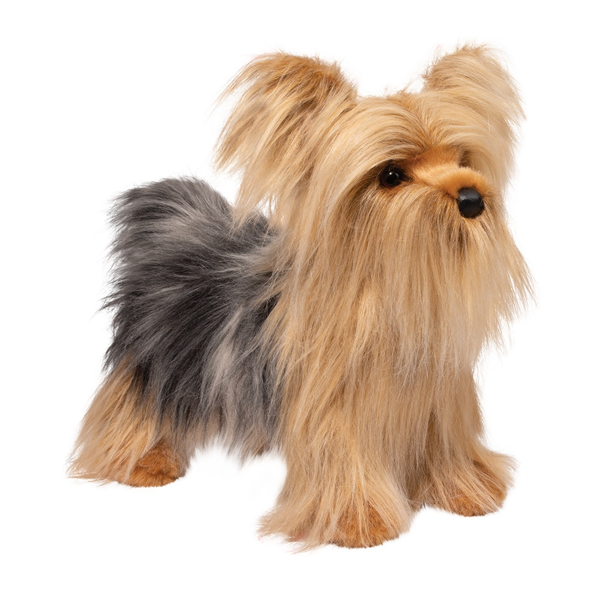

About the Yorkshire Terrier
The Yorkshire Terrier is a compact, toy-size terrier of no more than seven pounds whose crowning glory is a floor-length, silky coat of steel blue and a rich golden tan.
Don’t let the Yorkie’s daintiness fool you. Tenacious, feisty, brave, and sometimes bossy, the Yorkie exhibits all the traits of a true terrier. Often named the most popular dog breed in various American cities, Yorkies pack lots of big-town attitude into a small but self-important package. They are favorites of urbanites the world over.
Yorkies are long-lived and low-allergen (the coat is more like human hair than animal fur), and they make fine little watchdogs. This is a true “personality breed,” providing years of laughs, love, and close companionship.
History of Yorkshire Terriers
The Yorkshire Terrier was developed during the mid-1800s in the northern English counties of Yorkshire and Lancashire. It became a fashionable lapdog for proper English ladies in late Victorian times, but its beginnings were distinctly working-class.
The breed is said to be the creation of weavers from Scotland who migrated to the English north country and brought their Scottish terriers with them.
The Scots weavers were proud of their tough little terriers, bred small enough to squeeze into the nooks and crannies of textile mills in pursuit of rodents. Jokes were made about the Yorkie’s long, silky coat, inferring that its finely textured hair was a product of the looms. The Yorkie’s home region was a center of mining as well as textile making, and many Yorkies were employed in coal mines as exterminators.
 




